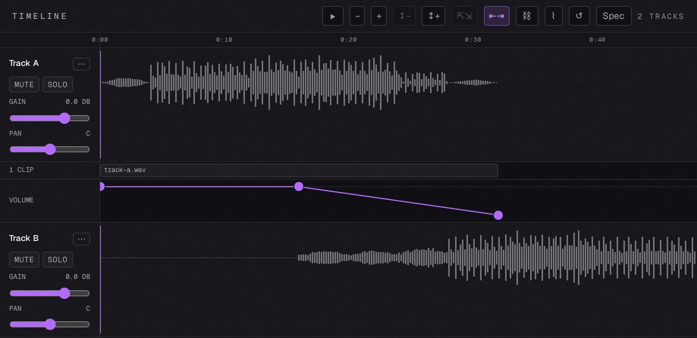
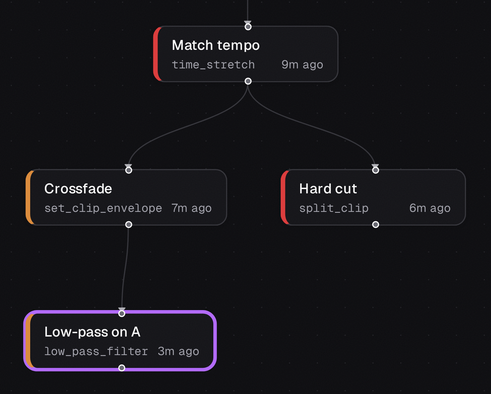
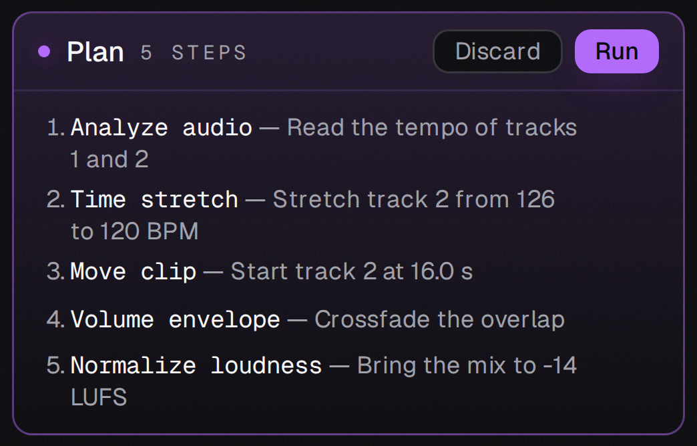

Every change is a tool call.

The real app's chat, with a scripted example conversation
How it is built
An AI audio editor where the AI never receives the audio.

Reads text: tempo, key, loudness. Answers with tool calls. Never receives the audio.
On your machine
Fade, EQ, time-stretch, loudness, export. Rust functions, no model in the audio path.
Decoded, edited, mixed and exported here, in the Rust engine.
The real app's chat, with a scripted example conversation
Fork a take, A/B it against the original, go back. Undo follows the path you actually took.

The real app's history graph, with example data
Right-click a node to compare it with another, or to set it as the head.
Turn it on and the agent's steps wait for you. No edit runs until you press Run.

The real app's plan card, with a scripted example plan
Discard it and nothing runs. Reword a step and the agent proposes again.
Rubber Band was the plan. It needs a different native package on each of three CI targets, the kind of dependency that breaks every build at once. So the phase vocoder is written here, in pure Rust.
The same build on macOS, Windows and Linux.
Dense material can sound smeared at large changes.
The reasoning is in the module docs of crates/audio-time/src/vocoder.rs
MIT-licensed. A Tauri 2 shell, a React front end and a Rust workspace behind it.
v{{version}} for macOS, Windows and Linux. The installers are unsigned, so macOS and Windows warn on first launch. edytlab.com